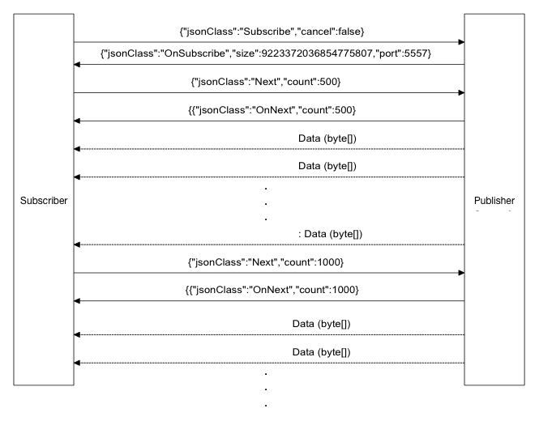

This application is a somewhat heuristic implementation of Reactive Streams utilizing zeroMQ as transport layer It creates a ReactiveZeroMQ Akka Extension that provides a: 1. pubSink that will transmit its data from an Akka Stream onto zeroMQ 2. subSource that will receive data over zeroMQ and stream it out to a subsequent Akka Stream 3. the pubSink and subSource are implementing the Reactive Streams protocol and as such allows for a back-pressure on the zeroMQ transmission It uses zeroMQ Pub/Sub socket as the transport for a Reactive Streams implementation with Akka Streams. Akka Streams is an implementation of [Reactive Streams](http://www.reactive-streams.org/) zeroMQ is a Socket Library disguised as a concurrency framework. "Sockets on steroids" The project depends on either jeromq or jzmq
"org.zeromq" % "jzmq" % "3.1.0"
"org.zeromq" % "jeromq" % "0.4.2"
A pubSink is acquired from the RxZMQExtension and is used as a sink at the end of a Akka Stream. All the messages will be forwarded over zeroMQ to a subscriber (subSource)
A subSource is acquired from the RxZMQExtension and is used as a source at the start of a Akka Stream. All the messages received from the zeroMQ socket is pushed onto the Akka Stream
Below is a trivial example running a connected processes.
import com.zenaptix.reactive.RxZMQExtension
import akka.actor.{Props, ActorSystem}
import akka.stream.ActorFlowMaterializer
import akka.stream.scaladsl.{Sink, Source}
import akka.util.Timeout
import com.typesafe.config.{Config, ConfigFactory}
import com.typesafe.scalalogging.LazyLogging
import zeromq.Message
import scala.concurrent.duration._
class RxZMQExtensionExample {
implicit val timeout: Timeout = Timeout(5 seconds)
implicit val materializer = ActorFlowMaterializer()
val conf = ConfigFactory.load()
def rxZmq = RxZMQExtension(system)
val sourcePath = conf.getString("gateway.source_path")
val file = new File(sourcePath)
// publish the messages from the file
SynchronousFileSource(file,13).map(b => {
println(s"[SOURCE] -> ${b.decodeString("UTF8")}")
Message(b)
}).runWith(rxZmq.pubSink())
// receive the messages from the file
var i = 0
val subSource = rxZmq.subSource("0.0.0.0:5556")
subSource.map(
m => {
i += 1
println(s"[SINK]] <- ${m.part.utf8String}")
}).runWith(Sink.ignore)
}
To run the above code - cd to the directory where the project was cloned and execute:
export RX_ZMQ_INSTALL_DIR=`pwd`
sbt test
package com.zenaptix.reactive
import java.io.File
import akka.actor.ActorSystem
import akka.stream.ActorFlowMaterializer
import akka.stream.io.SynchronousFileSource
import com.typesafe.config.ConfigFactory
import com.typesafe.scalalogging.LazyLogging
object ReactivePublisher extends App with LazyLogging {
implicit val system = ActorSystem("publisher")
implicit val materializer = ActorFlowMaterializer()
lazy val log = system.log
def rxZmq = RxZMQExtension(system)
val conf = ConfigFactory.load()
val sourcePath = conf.getString("gateway.source_path")
val file = new File(sourcePath)
SynchronousFileSource(file,13).map(b => {
logger.debug(s"[SOURCE] -> ${b.decodeString("UTF8")}")
Message(b)
}).runWith(rxZmq.pubSink())
system.awaitTermination()
}
sbt
> project publisher
> run
package com.zenaptix.reactive
import akka.actor.ActorSystem
import akka.stream.ActorFlowMaterializer
import akka.stream.scaladsl.Sink
import com.typesafe.config.ConfigFactory
import com.typesafe.scalalogging.LazyLogging
object ReactiveSubscriber extends App with LazyLogging {
implicit val system = ActorSystem("subscriber")
implicit val materializer = ActorFlowMaterializer()
def rxZmq = RxZMQExtension(system)
val conf = ConfigFactory.load()
val conn = s"${conf.getString("zeromq.host")}:${conf.getInt("zeromq.port")}")
rxZmq.subSource(conn).map(m =>
logger.debug(s"SINK <- ${m.part.decodeString("UTF8")}")).
runWith(Sink.ignore)
}
sbt
> project subscriber
> run
On OSX first install and run boot2docker
export RX_ZMQ_INSTALL_DIR=`pwd`
sbt
> project publisher
> docker:publishLocal
> exit
docker run -v $RX_ZMQ_INSTALL_DIR/data:/data -p 5556:5556 -p 5557:5557 \
-d --name rx_zmq_publisher com.zenaptix/rx_zmq_publisher:v0.4.1
and again:
sbt
> project subscriber
> docker:publishLocal
> exit
docker run -i -t --name rx_zmq_subscriber com.zenaptix:rx_zmq_subscriber:v0.4.1 -Dzeromq.host=$RXZMQ_PUBLISHER_IP
then view the logs :
docker logs rx_zmq_publisheror
docker logs rx_zmq_subscriber
rx_zmq_streams is implemented using a Req/Rep channel for exchanging control messages, and a pub/sub channel for receiving the actual data.

This software is licensed under the Apache 2
license.
The libzmq library is licensed under the GNU Lesser General Public License V3.